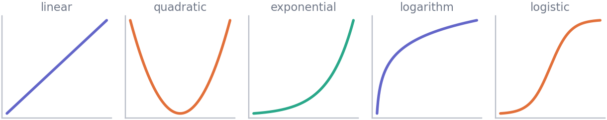

import numpy as np
print(np.sqrt(-4))nanMathematics · Unit 2
Why this unit is here
A function is the object every model in data science is. A regression is a function from predictors to a prediction; a loss is a function from parameters to a number you want small; a probability density is a function from an outcome to a height.
And a small number of shapes recur endlessly. Recognise those five curves and you can read most of what follows — including why nearly every quantity in data science gets logged at some point.
You should be able to:
Quick check. If \(f(x) = 3x + 1\), what is \(f(4)\)?
\(13\). Substitute 4 wherever \(x\) appears: \(3(4) + 1\).
f(4) in code does exactly the same thing.
A function is a rule with a domain: what you are allowed to put in.
\[ f : \mathbb{R} \to \mathbb{R}, \qquad f(x) = x^2 \]
Read as “\(f\) takes a real number and gives back a real number, by squaring it”. The rule alone is not the whole story — the domain is part of the definition, and leaving it out is where errors come from:
import numpy as np
print(np.sqrt(-4))nan\(\sqrt{x}\) is only defined for \(x \geq 0\) in the reals. Its domain is \([0, \infty)\), and NumPy warns rather than pretending otherwise.
The three that will catch you:

Linear, \(f(x) = a + bx\). Constant rate of change: every extra unit of \(x\) adds the same \(b\). The slope \(b\) is the whole content.
Quadratic, \(f(x) = ax^2 + bx + c\). Turns exactly once — a single maximum or minimum. Loss functions are often quadratic near their best point, which is why they are worth recognising.
Exponential, \(f(x) = e^x\). Constant proportional growth: every extra unit multiplies. Doubling times, compound interest, unchecked epidemics.
Logarithmic, \(f(x) = \ln x\). The inverse of the exponential. Grows without limit but ever more slowly.
Logistic, \(f(x) = 1/(1 + e^{-x})\). Starts flat, accelerates, saturates. It maps anything at all into \((0, 1)\), which is exactly what you want when the output must be a probability.
\[ \ln(e^x) = x \qquad e^{\ln x} = x \ (x > 0) \]
print(np.log(np.exp(3.7)))
print(np.exp(np.log(3.7)))3.7
3.7000000000000006Each undoes the other, which is what makes the logarithm the tool for getting a variable out of an exponent.
\[ \ln(ab) = \ln a + \ln b \qquad \ln\frac{a}{b} = \ln a - \ln b \qquad \ln(a^b) = b \ln a \]
a, b = 6.0, 2.5
print(np.isclose(np.log(a*b), np.log(a) + np.log(b)))
print(np.isclose(np.log(a/b), np.log(a) - np.log(b)))
print(np.isclose(np.log(a**b), b*np.log(a)))True
True
TrueThat third rule is the important one. It turns a power into a multiplication, which is how you solve for something stuck in an exponent:
\[ 2^x = 100 \implies x\ln 2 = \ln 100 \implies x = \frac{\ln 100}{\ln 2} \]
x = np.log(100) / np.log(2)
print(f"x = {x:.4f}, check: 2**x = {2**x:.4f}")x = 6.6439, check: 2**x = 100.0000log means the natural logarithm, base \(e\), in essentially all mathematics and in NumPy. Base 10 is np.log10, base 2 is np.log2. Calculators and spreadsheets often use log for base 10, which causes real confusion — check which you have.
Two reasons, both practical.
It turns multiplicative structure into additive structure. If a quantity grows by a constant percentage, its logarithm grows by a constant amount — a straight line, which is far easier to model and to read.
weeks = np.arange(0, 11)
users = 100 * 1.4**weeks # 40% growth per week
print("users: ", users.round(0)[:5], "...")
print("log users:", np.log(users).round(3)[:5], "...")
print("differences in log:", np.diff(np.log(users)).round(4)[:4])users: [100. 140. 196. 274. 384.] ...
log users: [4.605 4.942 5.278 5.615 5.951] ...
differences in log: [0.3365 0.3365 0.3365 0.3365]The raw numbers accelerate away; the differences in the log are constant at \(\ln 1.4 \approx 0.336\). Exponential growth has become a straight line.
It compresses a long right tail. Incomes, city sizes, file sizes and gene expression levels all have a few enormous values that dominate everything.
rng = np.random.default_rng(2026)
income = rng.lognormal(mean=10, sigma=1.0, size=1000)
print(f"raw: median {np.median(income):>10,.0f} mean {income.mean():>10,.0f}")
print(f"logged: median {np.median(np.log(income)):>10.2f} mean {np.log(income).mean():>10.2f}")raw: median 22,840 mean 38,177
logged: median 10.04 mean 10.02On the raw scale the mean sits well above the median, dragged by the tail. On the log scale they very nearly coincide.
But: a log changes what a difference means. A gap of 0.7 in logs is a factor of two, whatever the starting point. If you log, say so, and report back on the original scale where you can.
Reading the cohort’s diagnostic scores, and whether logging helps.
import pandas as pd
cohort = pd.read_csv("../data/cohort.csv")
hours = cohort["hours_practice"].to_numpy()
print(f"n {hours.size}")
print(f"min {hours.min():.1f} median {np.median(hours):.1f} "
f"mean {hours.mean():.1f} max {hours.max():.1f}")n 240
min 1.0 median 15.2 mean 16.4 max 36.2Mean and median are close, so there is no long tail here. Logging would achieve nothing, and that is worth checking rather than doing reflexively:
ratio = hours.mean() / np.median(hours)
print(f"mean / median = {ratio:.3f}")
print("strong right tail?" , ratio > 1.2)mean / median = 1.082
strong right tail? FalseNow a quantity where it does help — the same lognormal incomes:
for name, values in [("hours_practice", hours), ("simulated income", income)]:
r = values.mean() / np.median(values)
print(f"{name:<18} mean/median {r:5.2f} log-scale ratio "
f"{np.log(values).mean()/np.median(np.log(values)):5.2f}")hours_practice mean/median 1.08 log-scale ratio 0.97
simulated income mean/median 1.67 log-scale ratio 1.00The income data has a mean 65% above its median; after logging, the two agree to within a couple of per cent. The hours data was already symmetric and logging does nothing for it.
The lesson is the check, not the transformation: compare mean to median before deciding. A log is a tool for a specific shape, not a routine step.
Exercise 1 State the domain of each.
Exercise 2 Solve \(3^x = 50\) for \(x\), and check your answer.
Take logs of both sides and use \(\ln(a^b) = b\ln a\):
\[x\ln 3 = \ln 50 \implies x = \frac{\ln 50}{\ln 3} \approx 3.561\]
x = np.log(50) / np.log(3)
print(x, 3**x) # 3.5609..., 50.0000...Any base works as long as you use the same one on both sides — \(\log_{10}\) gives the identical answer, because the two logs differ by a constant factor that cancels in the ratio.
Exercise 3 A quantity doubles every 3 years. Write it as a function of years \(t\), then find how long until it is ten times its starting value.
\[N(t) = N_0 \cdot 2^{t/3}\]
Ten times the start means \(2^{t/3} = 10\), so
\[\frac{t}{3}\ln 2 = \ln 10 \implies t = \frac{3\ln 10}{\ln 2} \approx 9.97 \text{ years}\]
t = 3 * np.log(10) / np.log(2)
print(t, 2**(t/3)) # 9.966..., 10.0Worth noticing: ten-fold takes only about 3.3 doublings, not ten. Compounding is consistently faster than intuition expects, which is exactly why exponentials are worth recognising on sight.
Check an inverse actually inverts, over a range rather than at one point:
values = np.array([0.1, 1.0, 3.7, 250.0])
print(np.allclose(np.log(np.exp(values)), values))
print(np.allclose(np.exp(np.log(values)), values))True
TrueCheck a log rule rather than trusting your memory of it:
a, b = 6.0, 2.5
checks = {
"ln(ab) = ln a + ln b": (np.log(a*b), np.log(a) + np.log(b)),
"ln(a/b) = ln a - ln b": (np.log(a/b), np.log(a) - np.log(b)),
"ln(a^b) = b ln a": (np.log(a**b), b*np.log(a)),
"ln(a+b) = ln a + ln b": (np.log(a+b), np.log(a) + np.log(b)),
}
for name, (left, right) in checks.items():
print(f" {name:<26} {np.isclose(left, right)}") ln(ab) = ln a + ln b True
ln(a/b) = ln a - ln b True
ln(a^b) = b ln a True
ln(a+b) = ln a + ln b FalseThe last one is false, and deliberately included. There is no rule for the log of a sum, and inventing one is a standard error — the check catches it in one line.
Check the domain before applying a function to real data:
values = np.array([12.0, 0.0, 5.5, -3.0])
loggable = values > 0
print(f"{loggable.sum()} of {values.size} values can be logged")
print("logged:", np.log(values[loggable]).round(3))2 of 4 values can be logged
logged: [2.485 1.705]Filtering first is better than logging and then hunting for the -inf and nan that appear.
Where this usually goes wrong
log means base 10np.log10 when you mean base 10.
Answers are at the foot of the page.
What is the domain of \(\ln(x - 2)\)?
(b) \(x > 2\). Strictly greater — the logarithm is undefined at zero, so \(x = 2\) is excluded.
\(\ln(x^3) - \ln x = 3\ln x - \ln x = 2\ln x\). (Equivalently \(\ln(x^3/x) = \ln(x^2)\).) Valid for \(x > 0\).
Because constant-percentage growth means multiplying by the same factor each period, and the log of a product is a sum of logs — so equal multiplications become equal additions, which is a straight line.
A strong right skew: a few very large values dragging the mean far above the median. Try a log transform, then check whether mean and median come into agreement on the new scale.
Essentially never. It would need \(a + b = ab\), which for positive numbers holds only on a curve (for instance \(a = b = 2\)). It is not a rule and treating it as one is a standard error.